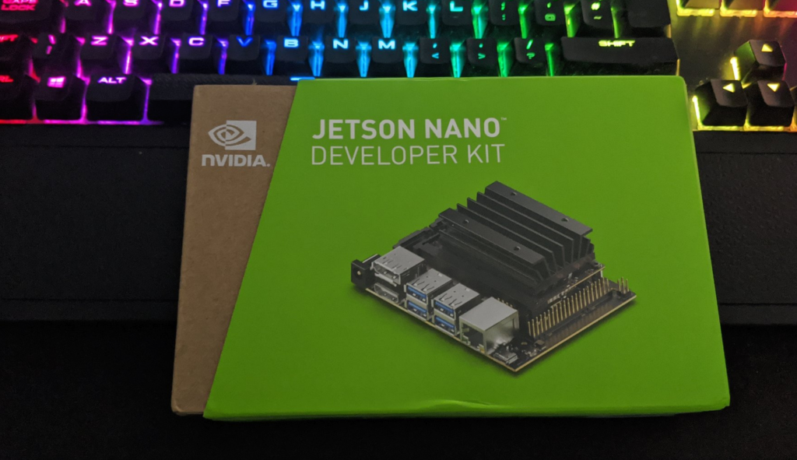

K3S and Nvidia Jetson Nano
K3S is a lightweight Kubernetes distribution developed by Rancher Labs, perfect for Edge Computing use cases where compute resources may be somewhat limited. It supports x86_64, ARMv7, and ARM64 architectures.
Ok, why the Nvidia Nano?
Deploying Kubernetes, be it K8s, K3s or otherwise is fairly well documented on devices such as the Raspberry Pi, however, I wanted to have an attempt doing so on a Nano for the GPU capabilities, which might be beneficial with ML/AI workloads.

Step 1 - Prep the Nano
Nvidia already has this well documented at https://developer.nvidia.com/embedded/learn/get-started-jetson-nano-devkit but the basics are to apply the provided image to an SD card.
Optional Step - Run OS from SSD
I decided to hook up my Nano to an SSD for better disk performance. JetsonHacks have a superb guide on how to set this up - but it still requires the use of an SD card as the Nano currently can’t boot from USB.
Step 2 - Update the Nano
It’s crucial that as a minimum docker is updated, but updating everything by doing a sudo apt update && sudo apt upgrade -y is a good idea.
The reasoning behind upgrading Docker is as of 19.03 usage of nvidia-docker2 packages is deprecated since Nvidia GPUs are now natively supported as devices in the Docker runtime. The Jetson image comes pre-installed with Docker.
Step 3 - Check Docker and Set the Default Runtime
Inspect the Docker configuration for the available runtimes:
david@jetson:~$ sudo docker info | grep Runtime
Runtimes: runc nvidia
Default Runtime: runc
As a test, if we run a simple container to probe the GPU with the default runtime it will fail.
david@jetson:~$ sudo docker run -it jitteam/devicequery
./deviceQuery Starting...
CUDA Device Query (Runtime API) version (CUDART static linking)
cudaGetDeviceCount returned 35
-> CUDA driver version is insufficient for CUDA runtime version
Result = FAIL
This is expected. runc in its current state isn’t GPU-aware, or at least, not aware enough to natively integrate with Nvidia GPU’s, but the Nvidia runtime is. We can test this by specifying the --runtime flag in the Docker command:
david@jetson:~$ sudo docker run -it --runtime nvidia jitteam/devicequery
./deviceQuery Starting...
CUDA Device Query (Runtime API) version (CUDART static linking)
Detected 1 CUDA Capable device(s)
Device 0: "NVIDIA Tegra X1"
CUDA Driver Version / Runtime Version 10.0 / 10.0
CUDA Capability Major/Minor version number: 5.3
Total amount of global memory: 3964 MBytes (4156911616 bytes)
( 1) Multiprocessors, (128) CUDA Cores/MP: 128 CUDA Cores
GPU Max Clock rate: 922 MHz (0.92 GHz)
Memory Clock rate: 1600 Mhz
Memory Bus Width: 64-bit
L2 Cache Size: 262144 bytes
Next, modify /etc/docker/daemon.json to set “nvidia” as the default runtime:
{
"default-runtime": "nvidia",
"runtimes": {
"nvidia": {
"path": "nvidia-container-runtime",
"runtimeArgs": []
}
}
}
Restart Docker:
sudo systemctl restart docker
And validate:
david@jetson:~$ sudo docker info | grep Runtime
Runtimes: nvidia runc
Default Runtime: nvidia
This will negate the need to define --runtime for subsequent containers
Install K3s
Installing K3s is very easy, the only difference to make in this scenario is to leverage Docker as the container runtime, instead of containerd which can be done by specifying it as an argument:
curl -sfL https://get.k3s.io | INSTALL_K3S_EXEC="--docker" sh -s -
After K3s has done its thing, we can validate by:
david@jetson:~$ kubectl get no -o wide
NAME STATUS ROLES AGE VERSION INTERNAL-IP EXTERNAL-IP OS-IMAGE KERNEL-VERSION CONTAINER-RUNTIME
jetson Ready master 2d6h v1.17.3+k3s1 192.168.1.218 <none> Ubuntu 18.04.4 LTS 4.9.140-tegra docker://19.3.6
Deploying the previous container as a workload:
david@jetson:~$ kubectl run -i -t nvidia --image=jitteam/devicequery --restart=Never
./deviceQuery Starting...
CUDA Device Query (Runtime API) version (CUDART static linking)
Detected 1 CUDA Capable device(s)
Device 0: "NVIDIA Tegra X1"
CUDA Driver Version / Runtime Version 10.0 / 10.0
CUDA Capability Major/Minor version number: 5.3
Total amount of global memory: 3964 MBytes (4156911616 bytes)
( 1) Multiprocessors, (128) CUDA Cores/MP: 128 CUDA Cores
GPU Max Clock rate: 922 MHz (0.92 GHz)
Memory Clock rate: 1600 Mhz
Memory Bus Width: 64-bit
L2 Cache Size: 262144 bytes
Maximum Texture Dimension Size (x,y,z) 1D=(65536), 2D=(65536, 65536), 3D=(4096, 4096, 4096)
Maximum Layered 1D Texture Size, (num) layers 1D=(16384), 2048 layers
Maximum Layered 2D Texture Size, (num) layers 2D=(16384, 16384), 2048 layers